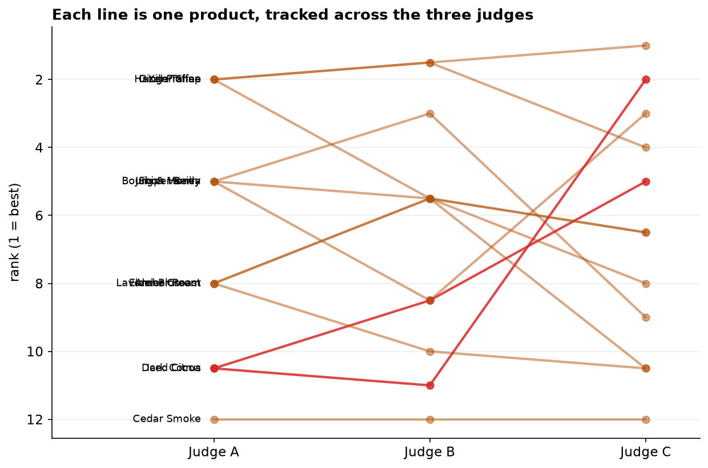
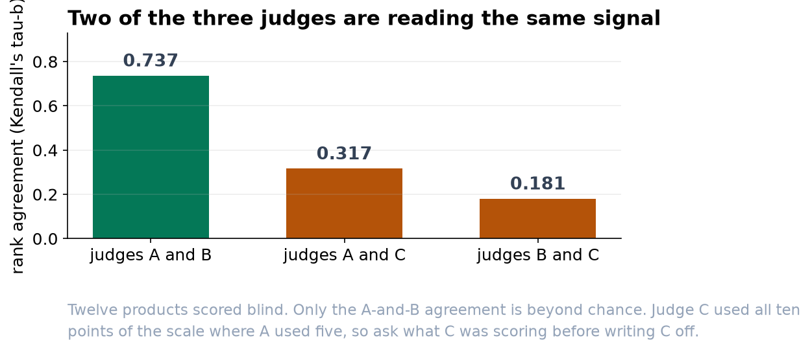

Two of Your Three Judges Are Reading the Same Signal
Judges A and B agree on the running order. Judge C does not, and a dozen products is not enough to say why.
Recommendation
Judges A and B rank the products the same way, closely enough that chance is not a credible explanation. Judge C does not agree with either. Use the A-and-B consensus for the shortlist, and before writing Judge C off, ask what C was scoring. A judge with different training, or one who tasted in a different order, produces exactly this pattern for a reason worth knowing.
What we found
Three judges scored the same twelve products blind, on a 1-to-10 scale. What matters for a shortlist is not whether they gave similar numbers but whether they put the products in the same order. A judge who marks everything two points low but ranks identically is no problem at all.
Measured that way, Judges A and B agree substantially. Of the 66 possible pairs of products they picked the same winner in 46 and disagreed in only 4. The agreement statistic is 0.74 on a scale where 1.0 would be perfect, and a result that strong turns up by luck roughly once in a thousand panels.


Judge C, and why we are not calling it a disagreement yet
Judge C's agreement with Judge A comes out at 0.32. That reads like a moderate score, and it is tempting to treat it as weak-but-real agreement. It is not safe to. With only twelve products, shuffling the scores at random produces a number that large about one time in five. Nothing in this panel distinguishes Judge C from someone ordering the products with no information at all.
That is a statement about the size of the panel, not about Judge C. Twelve products is what a palate can manage in a sitting, and it is simply too few to resolve moderate agreement from none. If we want to know whether Judge C is genuinely out of step, we need more products, not more analysis of these twelve.

What we suggest
- Shortlist on the A-and-B consensus. Where those two agree, the ordering is dependable.
- Talk to Judge C before adjusting anything. Different training, a different reading of "quality", or a different tasting order all produce this pattern. One conversation is worth more than another test.
- Randomize the tasting order per judge next time. If everyone tastes in the same sequence, some of the agreement we measured is agreement about position on the sheet.
- Keep this out of performance reviews. A number computed on twelve products is a panel diagnostic, not a rating of a person.
What we cannot say
The analysis measures whether judges ordered the products alike. It cannot say which judge is right. If Judge C is the only one picking up a quality the others miss, this method would still single C out as the outlier. Agreement and accuracy are different questions, and only the first one is answerable from a scoring sheet.